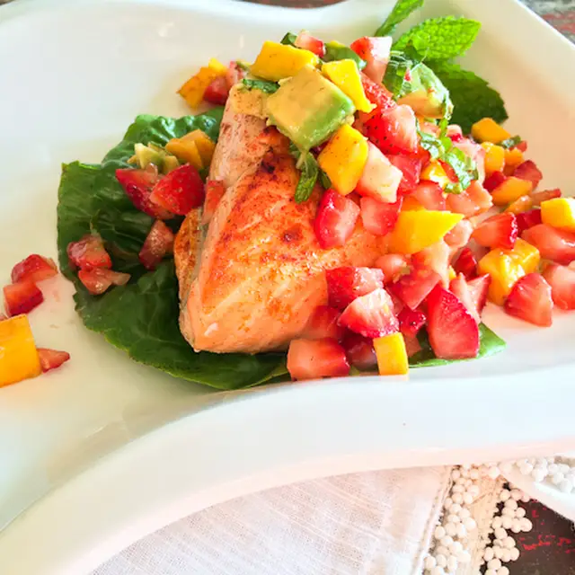

King Salmon
Make sure you have a little cooking experience under your belt before you try this one.
Ingredients
- 1 pound of fresh king salmon with skin on
- 1 tablespoon of lemon olive oil
- .5 teaspoon of sweet smoked paprika
- 12 fresh diced strawberries (optional, but it is my preferred choice)
- 1 diced mango (exclude if not in season
- .25 diced avacado
- 6 fresh mint leaves cut into ribbons
- 1 tablespoon of limoncello
- 1 dash of cayenne pepper
Instructions
- Dice the fruit and avocado
- Add the mint and Limoncello and gently mix together and sprinkle with cayenne pepper
- For the salmon: Heat the oven to Hi-Broil
- Rinse the salmon, pat dry with paper towels, cut into two portions
- Brush the salmon with lemon olive oil, sprinkle with sweet smoked paprika
- Place on a rimmed baking sheet, skin side down
- Place the baking sheet on the rack, 4-5 inches from the broiler and cook for about 6 minutes, depending on thickness
- Remove from oven and press gently on the fish with a fork, if the flesh parts (flakes) it is done. Do not overcook.
- Serve salmon and salsa together
Chef's Advice: Salmon is best when prepared to medium doneness - not completely cooked through